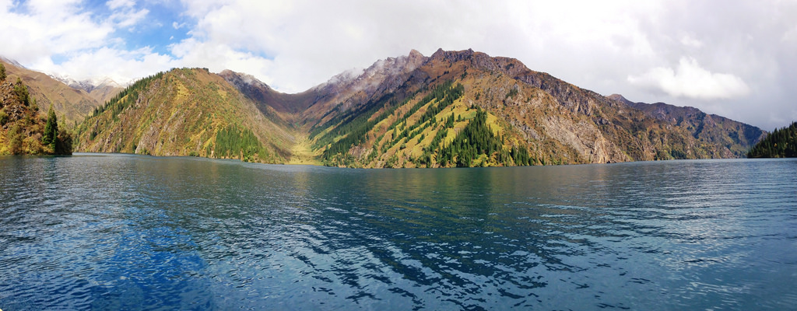
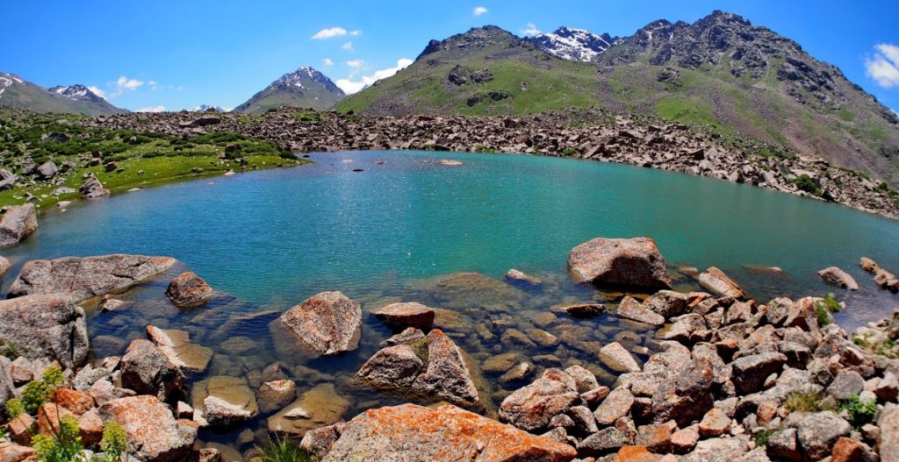
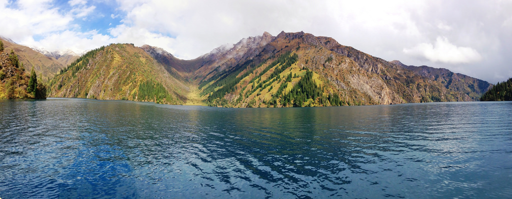
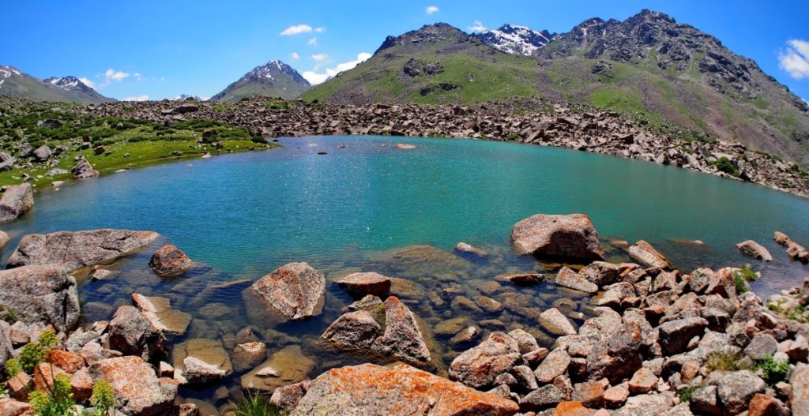

7Tash - Rabat
Departure to Tash-Rabat. The ancient caravanserai Tash-Rabat is one of the best and unique monuments of Kyrgyzstan,which is located at an altitude of more than 3500 m above sea level. Tash-Rabat was built in the XV century on the site of an ancient monastery of IX-X centuries.
There are two versions of its Foundation: the first — the fortress was founded by Khan who wanted to protect trade caravans from robbers, and at the same time contribute to the development of the country. The second — it was founded by a local rich man, but the construction of this castle did not end for unknown reasons.
Over time, Islam became firmly established in Central Asia, and the monastery began to decline. However, the proximity to the silk road did not allow the temple to turn into a desert. It was used as a caravanserai.
It is believed that Tash-Rabat was a key point in the transition through the Tien Shan, as not only provided shelter for merchants, but also served as a fortification in the raids of robbers. Trade caravans went through Tash-Rabat to the cities of Fergana Valley. This caravan is located in a beautiful place, surrounded by mountains and huge rocks of the At-bashinsky ridge. Also, this area has a very unusual feature — there are a large number of marmots, You are sure to see them. Excursion to Tash-Rabat. Departure to the city of Naryn. Night in hotel.
 


